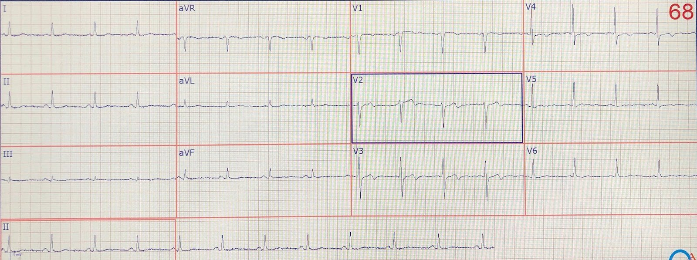
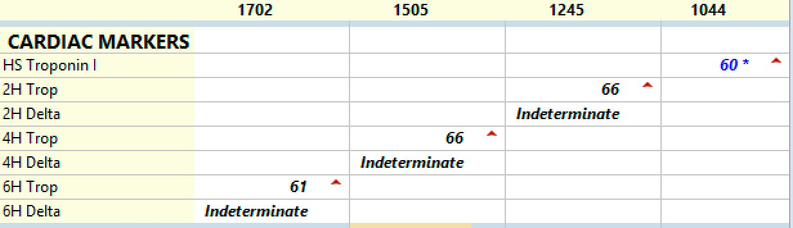
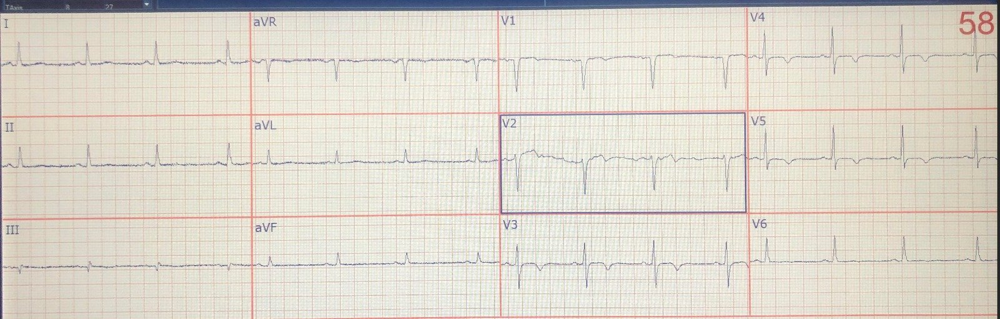

28/01/2021 — Hội chứng Wellens: đặt stent hay không? IVUS âm tính, triệu chứng dai dẳng, nghiệm pháp gắng sức, tỷ số tức thời không sóng (iFR) và phân suất dự trữ lưu lượng vành (FFR)
Bản dịch tiếng Việt của bài "Wellens’ syndrome: to stent or not? IVUS negative, Symptoms persist, Stress Testing, Instantaneous Wave Free Ratio, and Fractional Flow Reserve." – Dr. Smith’s ECG Blog. Giữ nguyên toàn bộ 3 hình ảnh của bản gốc.
Một bệnh nhân nam 55 tuổi, không có tiền sử bệnh tim mạch (PMHX), đến viện vì đau ngực khi gắng sức trong 2 tuần, nặng lên vào ngày trước khi đến viện. Vào ngày đến viện, cơn khó chịu ở ngực đặc biệt dữ dội, kèm vã mồ hôi và buồn nôn. Cơn đau đã hết (không còn đau) khi ghi điện tâm đồ:


Điện tâm đồ này được các bác sĩ đọc là “không đặc hiệu”.
Bạn nghĩ gì?
Đây là hình ảnh Wellens kiểu A kinh điển (sóng T hai pha, phần cuối sóng T đảo ngược), và đây là hội chứng Wellens (đau thắt ngực, đã hết — không còn đau — với sóng R được bảo tồn và sóng T Wellens kiểu A). Hình thái của những sóng T này rất đặc trưng và phần lớn các sóng T đảo ngược không khớp với hình ảnh này. Hình ảnh này biểu hiện một đoạn ST đi lên rồi đột ngột rơi xuống sóng T hơi âm. Nếu bạn nhận ra hình ảnh này, bạn sẽ không quá phụ thuộc vào troponin để chẩn đoán.
Hội chứng Wellens không bắt buộc kích hoạt phòng thông tim cấp cứu, vì động mạch đang thông và bệnh nhân không còn đau; không có thiếu máu cục bộ kéo dài đang diễn ra. Khi bệnh nhân bị đau ở giai đoạn trước viện, động mạch đã bị tắc, nhưng sau đó tự tái tưới máu (tự ly giải huyết khối, autolysis). Tuy nhiên, bệnh nhân có nguy cơ cao bị tắc lại bất cứ lúc nào và kích hoạt phòng thông tim là tối ưu vì trường hợp này nên được coi là một STEMI thoáng qua, trong đó ST chênh lên lẽ ra đã có mặt nếu điện tâm đồ được ghi trong lúc đau.
Troponin I độ nhạy cao Abbott ban đầu là 60 ng/L (giới hạn trên tham chiếu ở nam = 34 ng/L).
Giá trị troponin ban đầu này trong bối cảnh này gần như chẩn đoán nhồi máu cơ tim cấp. Định nghĩa thực sự của nhồi máu cơ tim cấp theo Định nghĩa toàn cầu lần thứ 4 đòi hỏi troponin tăng và/hoặc giảm.
Troponin thứ 2 cũng trả về 60 ng/L. Không tăng, không giảm.
Thường thì troponin thấp hoặc không động học có thể bị gạt đi bằng cách giải thích là “nhồi máu cơ tim típ 2” hoặc “tổn thương cơ tim” không phải nhồi máu, vì vậy bác sĩ này không muốn mạo hiểm để nhóm điều trị nội trú gạt bỏ như vậy.
Do đó, ông chỉ định chụp CT mạch vành:
–Điểm vôi hóa (phương pháp Agatston): 0.
Tiếp theo là chụp có thuốc cản quang:
–LAD: Mảng xơ vữa không vôi hóa ở LAD đoạn gần, với một khuyết thuốc dạng đường thẳng trong lòng mạch, đáng lo ngại bóc tách kèm khả năng hẹp nặng. Hình ảnh đáng lo ngại một chỗ hẹp nặng.
Thực tế, cả 4 lần đo troponin đều ở mức bình nguyên:


Vì vậy, LAD này hoàn toàn phù hợp với huyết khối LAD và hội chứng Wellens.
Bệnh nhân được đưa vào phòng thông tim trong vòng vài giờ: Kết quả chụp mạch vành:
Mảng xơ vữa lệch tâm, mờ (hazy), mức độ vừa ở lỗ xuất phát/đoạn gần LAD, được đánh giá bằng siêu âm trong lòng mạch (IVUS), cho thấy tổn thương ở LAD đoạn gần hẹp 50% nhưng không có bằng chứng nứt vỡ mảng xơ vữa. “Tổn thương khu trú và lệch tâm.”
LAD: Ghi nhận LAD type III. LAD là một mạch có khẩu kính lớn.
Tóm tắt: Không có bệnh tắc nghẽn đáng kể trên chụp mạch.
Điều trị nội khoa. Kiểm soát tích cực các yếu tố nguy cơ.
Do không chứng minh được mảng xơ vữa nứt vỡ trên IVUS, bác sĩ can thiệp đã không đặt stent. Điều này cũng là do tổn thương nằm rất gần lỗ xuất phát (gần chỗ tách ra từ thân chung động mạch vành trái) và do đó nguy cơ cao hơn.
Các diễn biến tiếp theo
Bệnh nhân được điều trị qua đêm bằng truyền heparin và nitroglycerin liên tục.
Điện tâm đồ ngày hôm sau:


Điện tâm đồ này cho thấy sóng Wellens tiến triển thành sâu hơn và đối xứng (Wellens kiểu B). Mặc dù troponin không tăng và/hoặc giảm, điều này khẳng định rằng ở đây có nhồi máu cơ tim cấp. Mặc dù định nghĩa đòi hỏi troponin tăng và/hoặc giảm, bất kỳ mức troponin tăng nào cũng có thể được gọi là nhồi máu cơ tim cấp trong hoàn cảnh phù hợp.
Ghi chú của khoa tim mạch
Điện tâm đồ cho thấy sóng Wellens, và chụp CT mạch vành tại khoa cấp cứu (ED) cho thấy mảng xơ vữa ở LAD đoạn gần. Xu hướng troponin đi ngang phù hợp nhất với đau thắt ngực không ổn định. Bệnh nhân được điều trị qua đêm bằng truyền nitroglycerin và heparin liên tục. Chụp mạch vành hôm nay cho thấy tổn thương LAD đoạn gần hẹp 50%, không làm PCI vì dòng chảy TIMI3, không có nứt vỡ trên IVUS, và gần thân chung động mạch vành trái. Bệnh nhân có một vùng mảng xơ vữa mềm, và vẫn có nguy cơ nứt vỡ. Kế hoạch là điều trị nội khoa với liệu pháp kháng tiểu cầu kép và statin cường độ cao, và làm nghiệm pháp gắng sức.
Lạ thay, bệnh nhân không được siêu âm tim.
Bệnh nhân được xuất viện với liệu pháp kháng tiểu cầu kép,
Bệnh nhân tiếp tục có cơn đau thắt ngực trong tháng tiếp theo. Bệnh nhân không được xét nghiệm troponin hay ghi điện tâm đồ thêm. Bệnh nhân được hẹn làm nghiệm pháp gắng sức Sestamibi với Regadenoson. (Regadenoson là một chất chủ vận thụ thể adenosin có tác dụng giãn mạch và được dùng thay cho gắng sức thể lực để gây gắng sức dòng chảy mạch vành)
Nghiệm pháp gắng sức này dương tính rõ rệt. Nó cho thấy:
1) rối loạn vận động thành trước và thành trước vách, phù hợp với ACS do LAD.
2) Khuyết tưới máu gây ra được và hồi phục ở các thành này, phù hợp với một tổn thương gây hạn chế dòng chảy. Điều này trái ngược với chụp mạch vành, vốn chỉ cho thấy hẹp 50%.
Bệnh nhân được đưa trở lại phòng thông tim vì nghiệm pháp gắng sức dương tính.
(Các) tổn thương thủ phạm: hẹp lệch tâm 50% ở lỗ xuất phát LAD, không thay đổi.
iFR (xem bên dưới) với đầu dò áp lực ở LAD đoạn xa là 0.94, gợi ý không có ý nghĩa huyết động (nhỏ hơn hoặc bằng 0.89 là có ý nghĩa; lớn hơn hoặc bằng 0.90 là không).
Ghi chú của bác sĩ chụp mạch: “Do có sự khác biệt giữa iFR và hình ảnh tưới máu cơ tim (MPI) với regadenoson, đã tiến hành đo FFR; FFR là 0.82 ở mức xung huyết tối đa. Mặc dù giá trị này cao hơn ngưỡng can thiệp truyền thống của chúng tôi, N Johnson và cs. đã đề xuất rằng nên dùng ngưỡng cao hơn cho bệnh LAD hoặc thân chung động mạch vành trái (lần lượt là 0.83 hoặc 0.86; Johnson, Nils P., và cs. “Prognostic value of fractional flow reserve: linking physiologic severity to clinical outcomes.” Journal of the American College of Cardiology 64.16 (2014): 1641-1654.)”
“Xét các yếu tố này cùng với cơn đau ngực gây hạn chế khi tập phục hồi chức năng tim, một đợt đau thắt ngực về đêm, và MPI bất thường, quyết định tiến hành PCI đã được đưa ra sau khi thảo luận với bệnh nhân.”
FFR = phân suất dự trữ lưu lượng vành (Fractional flow reserve). Đòi hỏi dùng thuốc giãn mạch để mạch máu phía xa tổn thương không cản trở dòng chảy. Phép đo này đo áp lực phía xa tổn thương, chia cho áp lực phía gần tổn thương. Được báo cáo dưới dạng phân số của 1 (ví dụ: 0.92)
iFR = tỷ số tức thời trong giai đoạn không sóng (instantaneous wave-Free Ratio). Tương tự, nhưng được đo trong thì tâm trương. “iFR là một chỉ số lúc nghỉ trong thì tâm trương, cho phép đánh giá các tổn thương mạch vành trong pha của chu chuyển tim mà sức cản vi mạch ở mức thấp nhất, cho phép tăng tưới máu cơ tim và dòng chảy mạch vành.” Câu trích dẫn từ bài báo này trên Circulation: Cardiovascular Interventions:
Instantaneous Wave-Free Ratio or Fractional Flow Reserve for Hemodynamic Coronary Lesion Assessment? Yes, Just Do It! (Tỷ số tức thời trong giai đoạn không sóng hay phân suất dự trữ lưu lượng vành để đánh giá huyết động tổn thương mạch vành? Vâng, cứ làm đi!)
Khác với FFR, iFR không đòi hỏi dùng thuốc giãn mạch vì không cần gây xung huyết khi đo áp lực trong giai đoạn tâm trương không sóng của chu chuyển tim. iFR đã được chứng minh giúp giảm thời gian thủ thuật, giảm khó chịu cho bệnh nhân và giảm chi phí so với FFR.
Những điểm cần học:
1. Trước hết, hãy nhận ra sóng Wellens và hội chứng Wellens.
2. Hội chứng Wellens hàm ý một tổn thương không ổn định.
3. Có một chân lý hiển nhiên rằng, nếu ACS không được đặt stent trong lần nhập viện đầu (index visit), nhiều khả năng sau này sẽ cần đặt. Xem bài này: “Pay me now, or pay me later” (“Trả tôi bây giờ, hoặc trả tôi sau”)
4. Sóng Wellens có thể giúp chẩn đoán ACS do LAD mặc dù troponin không tăng và/hoặc giảm.
5. Troponin có thể đi ngang (bình nguyên) trong nhồi máu cơ tim cấp và không biểu hiện tăng và/hoặc giảm.
6. Đặt stent cho một tổn thương là việc phức tạp
7. IVUS không phải lúc nào cũng mô tả đầy đủ một tổn thương mạch vành.
8. Có thể cần nhiều phương thức để làm cơ sở cho quyết định đặt stent.
9. FFR và iFR hữu ích trong việc xác định nhu cầu đặt stent.